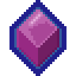
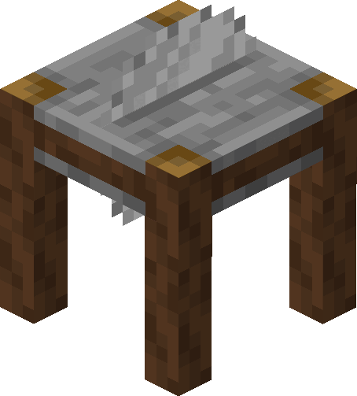
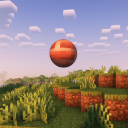
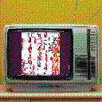
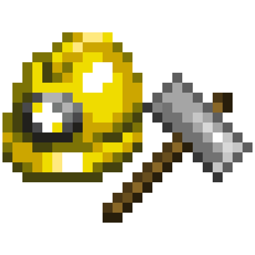

Menu
Index
Mods
Currently Maintained
Scarves
Comfortable dynamic simulated cloth trinkets
Engination
Gadget blocks for convention centers and adventure maps

Conventional Cubes
Over 200 cosmetic blocks from classic video games and original creations

Table Saw
A sawmill for cutting wood blocks

Suspicious Shapes
Use glTF models in resource packs and mods!

Static Data
Access mod integration data right away from your own mod initializer!
Maintained by Other Devs
LibGui
Minecraft GUIs without spending forever painstakingly aligning things to the background image
Debuggy Contributions

Architecture Extensions
A mod that allows you to make more detailed builds with all kinds of new building blocks and shapes